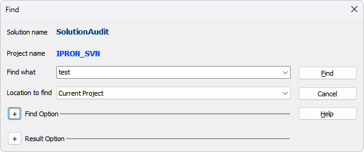
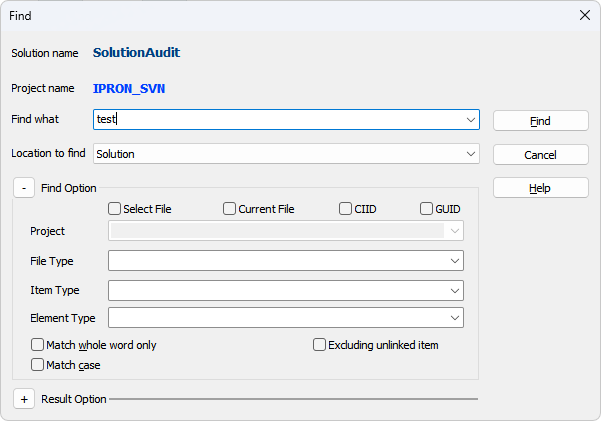
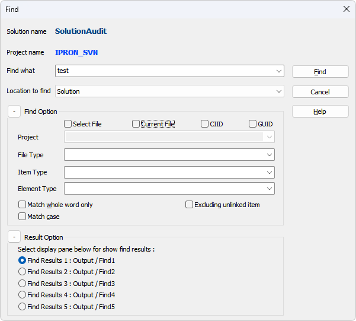
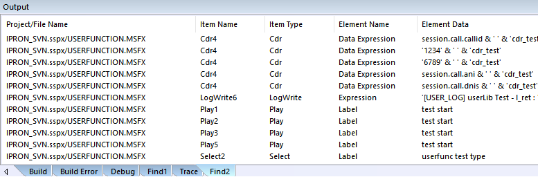
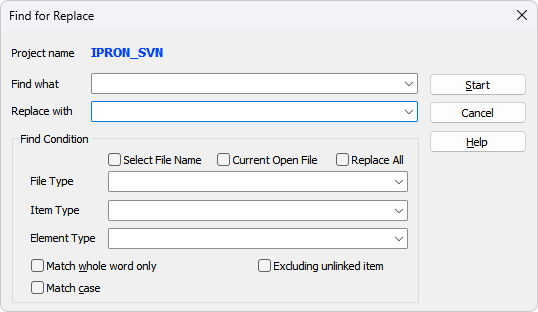
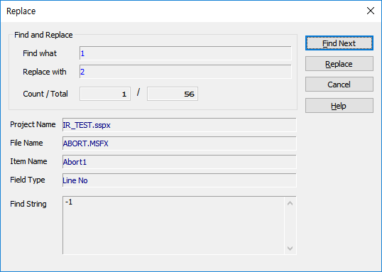

검색 / 치환은 아이템의 정보를 DB 에 기록하여 그 정보를 바탕으로 검색 및 치환이 이루어 집니다. 이번 버전을 컨버전 하거나 프로젝트가 새로 생성(저장시) 되면 자동으로 아이템의 정보를 수집 하여 DB 에 기록 합니다.
Find
· 리본 메뉴 Home > Find 메뉴를 선택하거나 단축키 Ctrl + F 를 누르면 검색창이 팝업 됩니다.

Solution name : 솔루션 이름이 표시 됩니다.
Project name : 현재 선택된 프로젝트 이름이 표시 됩니다.(Workspace 에서 선택된 Active Project)
Find what : 검색할 문자를 입력합니다. 검색된 문자는 최대 20개 까지 기억 되어 다시 선택 할 수 있습니다.
Location to find : 검색할 위치를 선택합니다.
Current Project : Project Name에 표신된 현재 선택된 프로젝트에서 검색합니다.
Select Project : Find Option > Project 속성에서 검색할 프로젝트를 선택 할 수 있습니다.
Solution : 솔루션에 포함된 프로젝트중 오픈된 프로젝트를 대상으로 검색합니다.
※ 주의 : 검색 시 편집(추가, 수정, 삭제) 중인 시나리오를 저장하지 않은 경우 검색되지 않거나, 수정 또는 삭제된 값이 검색될 수 있습니다.
Find Option.

Select File Name Check Box : 체크하면 File Type 항목에 검색대상 시나리오 파일(프로젝트에 포함된 시나리오 파일) 을 선택할 수 있습니다.
Current Open File Check Box : File Type 항목 보다 우선순위가 높아서 체크되면 File Type 에 지정된 파일에 상관없이 현재 오픈된 시나리오 파일 에서만 검색 합니다.
CIID Check Box : 컴포넌트 아이템 ID로 검색합니다.(ex. Play1, GetDigit2)
GUID Check Box : 아이템의 GUID로 검색합니다.
Project : Location to find 에서 "Select Project" 선택시 활성화 되며 오픈된 프로젝트가 리스팅 됩니다.
File Type : Select File Name Check Box 가 체크 되면 검색대상 시나리오 파일을 선택 할 수 있고, 체크 해제 되면 ".msfx", ".ssfx" 두개의 파일 타입 중에서 만 선택 할 수 있습니다.
Item Type : 검색 데이터가 있는 아이템을 선택 할 수 있습니다.(※ 편집 화면에서 아이템을 선택하고 검색을 누르면 자동으로 Item Type 이 지정 됩니다.)
Element Type : Item Type 에 아이템이 지정 되어 있으면 해당하는 아이템 속성을 선택 할 수 있습니다. Item Type 이 지정 되어 있지 않으면 모든 아이템들의 속성을 제공 합니다.
※ List 형태의 Element Type 은 두가지 Prefix 문자가 붙게 되는데 Ment 형일 경우는 앞에 "Ment" 라는 문자가 붙고 그외의 형일 경우는 "Data" 라는 문자가 붙게 됩니다.
예를 들면 GetDigit Item>Ment Info Tab>Ment Group의 "Expression [Ment ID]" 는 "Ment Expression" 이라는 이름으로 검색 되고, CDR Item>CDR Data List Tab>List 의 "Name" 은 "Data Name" 이라는 이름으로 검색 됩니다.
ex) Prefix "Ment" 가 붙는 아이템 "GetDigit, VoiceRecognize", Prefix "Data" 가 붙는 아이템 "CtiCall, MenuChange, CDR, PacketCall"
Match whole word only : 체크되면 검색 시 검색 문자가 모두 일치 해야 검색 됩니다.
Match case : 체크되면 검색 시 검색 문자의 대소 문자를 구분하여 검색 합니다.
Excluding unlinked item: 체크되면 Start 아이템부터 연결되는 링크에서 연결이 끊어진 아이템들은 검색에서 제외합니다.
Result Option.

Find Results1 ~ Find Results5 까지 5개의 검색 결과 창 중에서 선택 할 수 있으며 기본 Find Results1이 선택됩니다.
5개의 검색 결과창을 이용하여 서로 다른 검색결과를 사용할 수 있다.
Find Button : 검색을 시작 합니다.
Cancel Button : 검색을 취소 합니다.
· 검색이 완료되면 Output Window 의 Find1 ~ Find5 탭에 검색 결과가 리스팅 됩니다.

Project / File Name : 프로젝트이름 / 파일 이름
Item Name : 아이템 이름
Item Type : 아이템 타입
Element Name : 아이템 속성
Element Data : 검색된 내용
아이템 이동 : 리스트에서 항목을 선택하고 더블클릭 하면 선택한 아이템으로 이동합니다. 또는 리본 메뉴 Home > Find & Replace > Next(F3), Previous(Ctrl+F3) 메뉴를 선택합니다.
Replace
· 리본 메뉴 Home > Find 메뉴를 선택하거나 단축키 Ctrl + R 을 누르면 검색/치환 창이 팝업 됩니다.

Project name : 현재 검색할 프로젝트 이름이 표시 됩니다.(Workspace 에서 선택된 Active Project)
Find what : 검색할 문자를 입력합니다. 검색된 문자는 최대 20개 까지 기억 되어 다시 선택 할 수 있습니다.
Replace with : 치환할 문자를 입력합니다. 치환된 문자는 최대 20개 까지 기억 되어 다시 선택 할 수 있습니다.
※ 알림 : 치환의 경우 저장하지 않으면 이전 데이터가 치환 되는 등 예외 상황이 많이 발생하기 때문에 반드 시 저장을 해야 치환을 진행 할 수 있습니다.
Find Condition.
Select File Name Check Box : 체크하면 File Type 항목에 검색대상 시나리오 파일(프로젝트에 포함된 시나리오 파일) 을 선택할 수 있습니다.
Current Open File Check Box : File Type 항목 보다 우선순위가 높아서 체크되면 File Type 에 지정된 파일에 상관없이 현재 오픈된 시나리오 파일 에서만 검색 합니다.
Replace All Check Box : 치환 시 검색한 데이터를 한개 씩 확인하고 치환하지 않고 확인 없이 한꺼번에 모두 치환 합니다.
※ 주의 : 의도하지 않은 값이 바뀔 수 있으므로 충분히 주의 하여야 합니다. 또한 자동으로 치환 되기 때문에 내부적으로 파일을 열고 치환 한 후 다음 파일을 열기 전 저장되기 때문에 Undo 또는 파일을 저장하지 않고 닫는 등의 처리로는 되돌릴 수 없습니다.
File Type : Select File Name Check Box 가 체크 되면 검색대상 시나리오 파일을 선택 할 수 있고, 체크 해제 되면 ".msfx", ".ssfx" 두개의 파일 타입 중에서 만 선택 할 수 있습니다.
Item Type : 검색 데이터가 있는 아이템을 선택 할 수 있습니다.(※ 편집 화면에서 아이템을 선택하고 검색을 누르면 자동으로 Item Type 이 지정 됩니다.)
Element Type : Item Type 에 아이템이 지정 되어 있으면 해당하는 아이템 속성을 선택 할 수 있습니다. Item Type 이 지정 되어 있지 않으면 모든 아이템들의 속성을 제공 합니다.
※ List 형태의 Element Type 은 두가지 Prefix 문자가 붙게 되는데 Ment 형일 경우는 앞에 "Ment" 라는 문자가 붙고 그외의 형일 경우는 "Data" 라는 문자가 붙게 됩니다.
예를 들면 GetDigit Item>Ment Info Tab>Ment Group의 "Expression [Ment ID]" 는 "Ment Expression" 이라는 이름으로 검색 되고, CDR Item>CDR Data List Tab>List 의 "Name" 은 "Data Name" 이라는 이름으로 검색 됩니다.
ex) Prefix "Ment" 가 붙는 아이템 "GetDigit, VoiceRecognize", Prefix "Data" 가 붙는 아이템 "CtiCall, MenuChange, CDR, PacketCall"
Match whole word only : 체크되면 검색 시 검색 문자가 모두 일치 해야 검색 됩니다.
Match case : 체크되면 검색 시 검색 문자의 대소 문자를 구분하여 검색 합니다.
Excluding unlinked item: 체크되면 Start 아이템부터 연결되는 링크에서 연결이 끊어진 아이템들은 검색에서 제외합니다.
Start Button : 검색 및 치환을 시작합니다.
Cancel Button : 검색 및 치환을 취소 합니다.
· 검색이 완료되면 치환 윈도우가 팝업 되면서 검색된 처음 아이템으로 이동 합니다.
※ Replace All이 체크된 경우 아래의 윈도우는 팝업되지 않습니다.

♣ List 의 치환의 경우 검색된 내용이 같은 내용이므로 리스트의 항목이름도 같고 내용도 같기 때문에 정확히 몇번째 Row 의 데이터인지 알수 없어서 무조건 List 의 순서대로 값을 치환하거나 또는 치환하지 않고 다음으로 넘어갑니다. 이때, 처리한(치환 또는 다음) 데이터는 처리완료에 따로 보관하기 때문에 처리한 데이터가 다시 처리되는 일은 없다.
Find and Replace
Find what : 검색한 문자를 표시 합니다.
Replace with : 치환할 문자를 표시 합니다.
Count / Total : 현재 처리중인 아이템 카운트 / 검색된 모든 아이템 카운트 입니다.
File Name : 현재 처리중 이동한 시나리오 파일 이름 입니다.
Item Name : 현재 처리중 이동한 아이템 이름 입니다.
Field Type : 현재 처리중인 아이템의 속성 입니다.
Find String : 검색 문자에 의해 검색된 문자열 입니다.
Find Next Button : 치환 하지 않고 다음 아이템으로 이동 합니다.
Replace Button : 치환 하고 다음 아이템으로 이동 합니다.
|